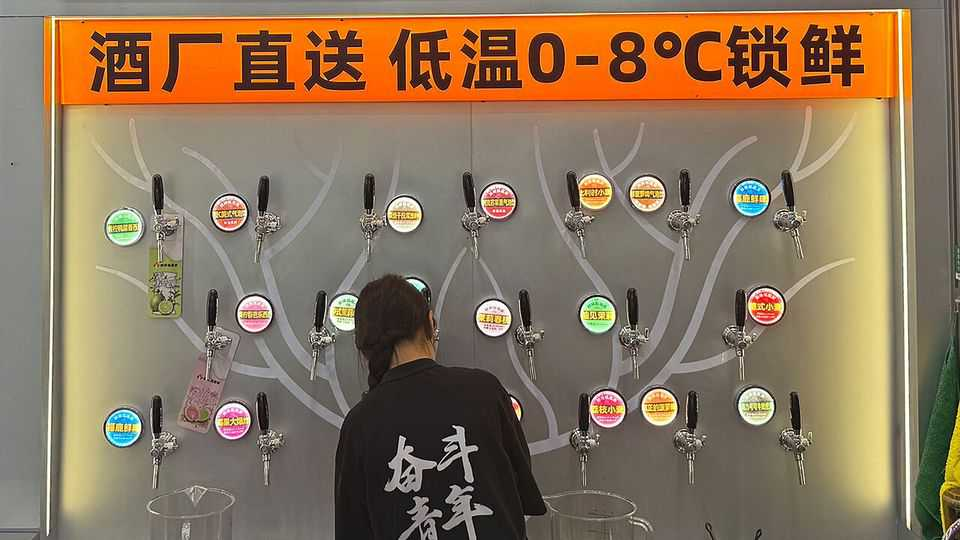

The world’s biggest fast-food chain is moving into pubs
Why China’s Mixue Bingcheng is serving up beer

Aug 13th 2026
Even in the most remote corner of China a frothy Fulujia beer is waiting for you. The company, whose name translates as “Lucky Deer”, has opened more than 3,200 mini-pubs across the country since 2021, making it the world’s largest bar chain. More impressive than its scale are its prices. A pint is poured for as little as 5.9 yuan ($0.87), whether it is served in a big city or a border town.
Fulujia premises are small but uniform micro-watering holes that have 20 beers on draft and a bijou seating area. They often sell bar snacks such as fried pork and edamame beans. When asked why prices are so low, the proprietor of a recently opened Fulujia in Lushui, a town in the deep south-west, says it is because the company is owned by Mixue Bingcheng, a tea and cold-drinks mega-chain that has around 60,000 outlets worldwide. Last year it overtook McDonald’s, the American burger giant, to become the world’s largest fast-food operator by number of locations.
Mixue bought a controlling stake in Fulujia in October. Both are run on similar franchise models. Franchisees pay an upfront cost of about 60,000 yuan for everything that is needed to launch a mini-pub, such as beer pumps and branded decorations (though rent and renovation costs are not included). They are exempt from paying royalties for three years.
The secret to Mixue’s success is its mastery of supply chains. It is often described as a logistics company rather than a fast-food chain. The efficiency with which Mixue has been able to move supplies has kept costs for consumers remarkably low—its marquee drink is a four-yuan lemonade. Fulujia uses the same logistics networks to ship its beer from Henan province, where both Mixue and Fulujia are based, to its franchisees, who do not pay transport costs, even when they are as far away as Lushui, more than 2,000km from the brewery.
A franchising model coupled with a highly efficient supply chain has turbocharged the openings of Mixue outlets—roughly 40 a day appeared in 2025. The effects have been similar for Fulujia. Nearly two-thirds of its 3,200 bars have been launched since Mixue bought its stake late last year. This also appears to be working for the group’s café chain, Lucky Cup, of which there were at least 10,000 in China at the end of last year.
The model is enjoying some success outside China, too. Mixue has around 5,000 outlets abroad, making it by far the most successful Chinese fast-food chain outside the country. It has also opened Lucky Cup branches in Malaysia and Thailand. Fulujia has not yet announced plans to go overseas. But with pubs in New York and London serving up painfully expensive pints, cheap Chinese brews would be sure to receive a welcome from drinkers.■